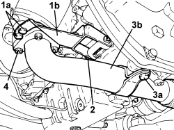
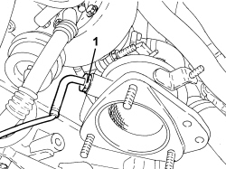
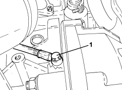
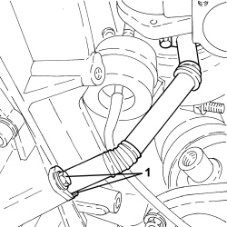
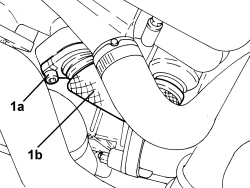
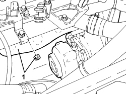
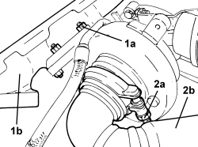
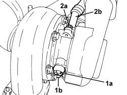

1064A22 VARIABLE GEOMETRY TURBOCHARGER R R
- Path
- Procedures > 10 ENGINE > 1064 ENGINE SUPERCHARGING SYSTEM > 1064A TURBOCHARGER ASSEMBLY > 1064A22 VARIABLE GEOMETRY TURBOCHARGER R R
- Kind
- repair procedure (removal / refitting; the operation number is the code)
- Applies to
- engines: 2.4 JTD 20v; all production periods
- Interactive page
- https://sloeber94.github.io/elrnDB-aBrrSpdr/en/#/946003010
Applies to: engines: 2.4 JTD 20v; all production periods
 Removing
Removing
 Refitting
RefittingOp. 1016A10 SOUND-PROOFING COVER - R.R
Op. 1048A51 RIGID AIR INTAKE HOSE TO TURBOCHARGER - R.R
Op. 1048A42 SLEEVE FROM FLOW METER TO TURBO CHARGER AIR INLET PIPE - R + R
Op. 0010T84 COOLANT FOR AIR CONDITIONING SYSTEM - DEHYDRATE AND REPRESSURIZE
Op. 7055B54 UNDER ENGINE PROTECTION/GUARD - R.R.
Op. 4450B04 RIGHT FRONT WHEEL - R.R
Op. 7055B91 RIGHT FRONT WHEEL ARCH LINER - R.R.
Op. 1092C26 BELT FROM AIR CONDITIONER COMPRESSOR DRIVING POWER STEERING PUMP - R + R
Op. 1092B68 BELT FROM A/C COMPRESSOR TO ALTERNATOR DRIVE - R + R
Op. 5040A20 AIR CONDITIONING COMPRESSOR - R+R - INCLUDES FLUID LEVEL CHECK AND TOP UP IF NECESSARY
Op. 1072C44 EXHAUST MANIFOLD HEAT SHIELD - R+R
1. Unscrew bolts (1a) securing bracket (1b) to the catalytic converter.
2. Undo bolt securing bracket (1b) to the engine oil sump and remove it.
3. Undo bolt (3a) securing exhaust pipe (3b) to the engine oil sump.
4. Undo nuts securing exhaust pipe (3b) to the catalytic converter and move it to one side.
- Remove the gasket.

Applies to: engines: 2.4 JTD 20v; all production periods
1. Unscrew the exhaust gas temperature sensor from the catalytic converter.

Applies to: engines: 2.4 JTD 20v; all production periods
1. Undo the engine oil delivery pipe connector, engine crankcase side.

Applies to: engines: 2.4 JTD 20v; all production periods
1. Undo the bolts securing the engine oil return pipe, engine oil sump side.

Applies to: engines: 2.4 JTD 20v; all production periods
1. Unscrew bolts (1a) securing exhaust gas pipe (1b) for the E.G.R.

Applies to: engines: 2.4 JTD 20v; all production periods
1. Undo the nuts securing the exhaust manifold to the cylinder head and remove it complete with turbocharger and catalytic converter.
- Remove the gasket.

Applies to: engines: 2.4 JTD 20v; all production periods
1. Undo nuts (1a) securing exhaust manifold (1b) to the turbocharger and remove it.
2. Loosen collar (2a) and disconnect catalytic converter (2b) from the turbocharger.

Applies to: engines: 2.4 JTD 20v; all production periods
1. Undo connector (1a) and remove turbocharger engine oil supply pipe (1b).
2. Undo bolts (2a) and remove turbocharger engine oil return pipe (2b).

Applies to: engines: 2.4 JTD 20v; all production periods
Refitting
Removing- Place the turbocharger engine oil return pipe back in position and tighten the turbocharger-side bolts to the recommended torque.
Component | Fastening | dia | Value (daNm) | Validity |
|---|---|---|---|---|
Engine oil return pipe from turbocharger | Bolt | M6 | 0.8 ÷ 1.0 | 2.4 JTD 20v |
- Place the engine oil supply pipe back in position and tighten the turbocharger-side connector to the recommended torque.
Component | Fastening | dia | Value (daNm) | Validity |
|---|---|---|---|---|
Engine oil supply pipe to turbocharger - turbocharger side | Connector | M10 | 1.5 | 2.4 JTD 20v |
- Connect the catalytic converter to the turbocharger and fasten it using the collar.
- Tighten the nuts securing the exhaust manifold to the turbocharger to the recommended torque.
Component | Fastening | dia | Value (daNm) | Validity |
|---|---|---|---|---|
Exhaust manifold | Nut | M8 | 2.3 ÷ 2.8 | 2.4 JTD 20v |
- Fit a new gasket onto the exhaust manifold.
- Place the exhaust manifold complete with turbocharger and catalytic converter back in position and secure to the cylinder head by tightening the nuts to the recommended torque.
Component | Fastening | dia | Value (daNm) | Validity |
|---|---|---|---|---|
Exhaust manifold | Nut | M8 | 2.3 ÷ 2.8 | 2.4 JTD 20v |
- Tighten the bolts securing the exhaust gas pipe for the E.G.R. to the recommended torque.
Component | Fastening | dia | Value (daNm) | Validity |
|---|---|---|---|---|
Exhaust gas pipe for E.G.R. | Bolt | M8 | 2.3 ÷ 2.8 | 2.4 JTD 20v |
- Tighten the bolts securing the engine oil return pipe, oil sump side, to the specified torque.
Component | Fastening | dia | Value (daNm) | Validity |
|---|---|---|---|---|
Engine oil return pipe from turbocharger | Bolt | M6 | 0.8 ÷ 1.0 | 2.4 JTD 20v |
- Tighten the engine oil delivery pipe connector, engine crankcase side, to the recommended torque.
Component | Fastening | dia | Value (daNm) | Validity |
|---|---|---|---|---|
Engine oil supply pipe to turbocharger - crankcase side | Connector | M12 | 2.2 ÷ 2.7 | 2.4 JTD 20v |
- Tighten the exhaust gas temperature sensor onto the catalytic converter.
- Place the exhaust pipe complete with new gasket back in position and secure it to the catalytic converter by tightening the nuts to the recommended torque.
Component | Fastening | dia | Value (daNm) | Validity |
|---|---|---|---|---|
Intermediate exhaust pipe with flexible section - catalytic converter side | Nut | M8 | 2.2 ÷ 2.6 | 2.4 JTD 20V |
- Tighten the bolt securing the exhaust pipe to the engine oil sump.
- Place the bracket back in position and secure the bolt fastening it to the oil sump.
- Tighten the bolts securing the bracket to the catalytic converter.
Op. 1072C44 EXHAUST MANIFOLD HEAT SHIELD - R+R
Op. 5040A20 AIR CONDITIONING COMPRESSOR - R+R - INCLUDES FLUID LEVEL CHECK AND TOP UP IF NECESSARY
Op. 1092B68 BELT FROM A/C COMPRESSOR TO ALTERNATOR DRIVE - R + R
Op. 1092C26 BELT FROM AIR CONDITIONER COMPRESSOR DRIVING POWER STEERING PUMP - R + R
Op. 7055B91 RIGHT FRONT WHEEL ARCH LINER - R.R.
Op. 4450B04 RIGHT FRONT WHEEL - R.R
Op. 7055B54 UNDER ENGINE PROTECTION/GUARD - R.R.
Op. 0010T84 COOLANT FOR AIR CONDITIONING SYSTEM - DEHYDRATE AND REPRESSURIZE
Op. 1048A42 SLEEVE FROM FLOW METER TO TURBO CHARGER AIR INLET PIPE - R + R
Topics linked from this page (12)
- 0010T84 COOLANT FOR AIR CONDITIONING SYSTEM - DEHYDRATE AND REPRESSURIZE
- 1016A10 SOUND-PROOFING COVER - R.R
- 1048A42 SLEEVE FROM FLOW METER TO TURBO CHARGER AIR INLET PIPE - R + R
- 1048A51 RIGID AIR INTAKE HOSE TO TURBOCHARGER - R.R
- 1072C44 EXHAUST MANIFOLD HEAT SHIELD - R+R
- 1092B68 BELT FROM A/C COMPRESSOR TO ALTERNATOR DRIVE - R + R
- 1092C26 BELT FROM AIR CONDITIONER COMPRESSOR DRIVING POWER STEERING PUMP - R + R
- 4450B04 RIGHT FRONT WHEEL - R.R
- 5040A20 AIR CONDITIONING COMPRESSOR - R+R - INCLUDES FLUID LEVEL CHECK AND TOP UP IF NECESSARY
- 7055B54 UNDER ENGINE PROTECTION/GUARD - R.R.
- 7055B91 RIGHT FRONT WHEEL ARCH LINER - R.R.
- 7210E10 R.R. FRONT BUMPER